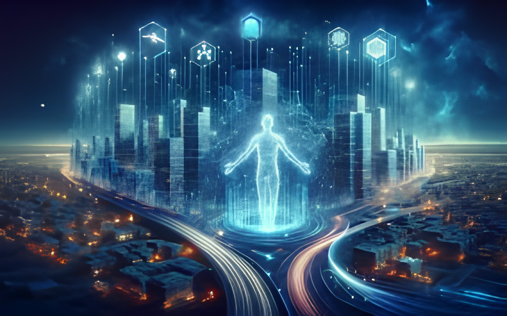

Vad För Framtiden Med Sig?
Den mest spännande – och kanske den mest skrämmande – sidan av AI är morgondagen. Utvecklingshastigheten rör sig idag exponentiellt, vilket gör framtiden väldigt svår att förutse.

Artificiell Generell Intelligens (AGI)
Ett stort mål för företag som OpenAI och Google DeepMind är att uppnå AGI. Med AGI menas en maskin som är lika bra eller bättre än en människa på exakt alla kognitiva uppgifter.
Dagens AI är väldigt snäv, en chattrubot kan chatta, men den kan inte köra bil eller koka kaffe. En AGI kommer dock att kunna anpassa sig och lära sig nya uppgifter blixtsnabbt. Om, eller kanske snarare när, detta uppnås tror mänskligheten antingen vi hamnar i ett svårslaget utopia – eller att det utgör vårat slutgiltiga existentiella hot.
Den Kognitiva Revolutionen & Singulariteten
Många experter kallar den nuvarande utvecklingen för den kognitiva revolutionen. Precis som den industriella revolutionen befriade oss från tungt fysiskt arbete, är AI-revolutionen på väg att dramatiskt omforma vårt kognitiva landskap. Istället för att vi människor producerar all ny kunskap och idéer, bygger vi nu verktyg som kan tänka, planera och forska åt oss.
Ett teoretiskt och fascinerande (men spekulativt) koncept är Teknologisk Singularitet. Detta är en hypotetisk tidpunkt i framtiden då en uppgraderingsbar AI lyckas bygga en ännu smartare version av sig själv. Denna nya version bygger i sin tur en ännu smartare version, vilket resulterar i en oändlig och explosionsartad intelligensutveckling. Vad som händer efter en sådan intelligensexplosion är omöjligt för oss att förutspå, eftersom intelligensen snabbt skulle överträffa all samlad mänsklig förmåga.
Revolutionen handlar i grunden om ett skifte: vi går från att använda tekniken som ett statiskt verktyg till att interagera med den som en autonom medarbetare och problemlösare. Det kommer att kräva en helt ny syn på vad det innebär att vara människa i ett digitalt samhälle.
Min Framtidsprofetia
Personligen tror jag att tekniken kommer att radikalt definiera om vad "arbete" betyder för människor inom de närmaste 20 åren. Likt industriella revolutionen tog över det tunga fysiska arbetet, kan AI-revolutionen ta över majoriteten av det repetitiva kognitiva arbetet.
Vi går troligen mot en värld med extremt kundanpassade supertjänster; 100% autonoma bilsystem som eliminerar olyckor, sjukvård som kan förutse sjukdomar åratal i förväg, och spel/filmer som skapas unikt on-the-fly för just dina personliga preferenser.